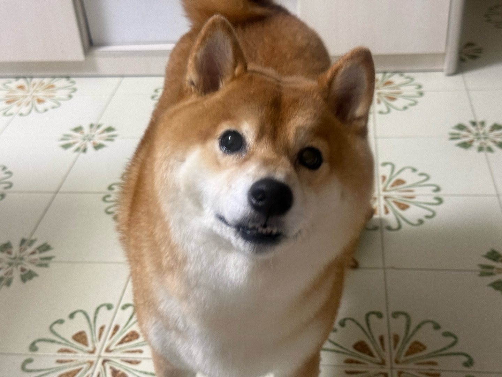
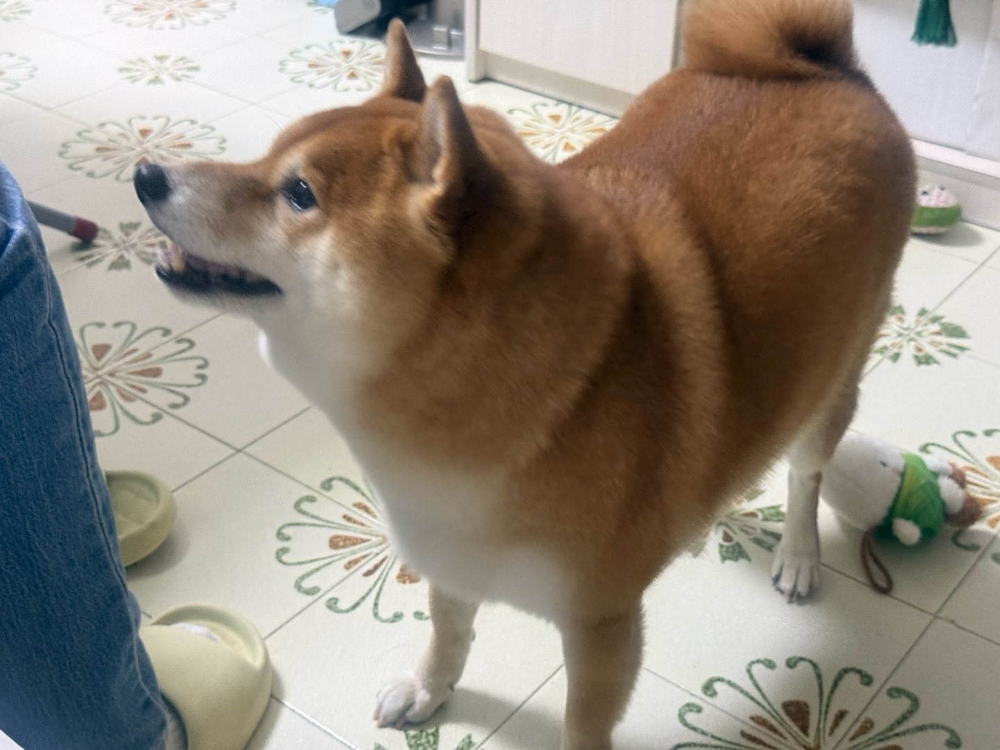

原產地
日本 · 中部山區
長野、岐阜、群馬一帶

Breed Profile
柴犬係日本六種原生犬（日本犬）之中體型最細嘅一種，被日本指定為「天然記念物」。以下數字以國際標準（FCI／AKC）為準，實際會因血系同飼養而有出入。
原產地
日本 · 中部山區
長野、岐阜、群馬一帶
犬種分類
尖嘴犬系
FCI 第 5 組 · 亞洲尖嘴犬
體高（肩高）
34–42 cm
公 38–42 cm · 母 34–39 cm
體重
7–11 kg
公約 9–11 kg · 母約 7–8.5 kg
平均壽命
13–16 年
中型犬中屬長壽
毛色
赤 · 黑褐 · 胡麻
另有奶油色，屬非標準色
性格關鍵詞
獨立 · 忠誠 · 警覺
安靜、愛乾淨、有主見
每日運動
30–60 分鐘
分兩次散步更理想
Origin
「柴」呢個字有幾個講法：一說指佢體型細，一手就可以抱住，好似一束柴草；一說指佢原本喺灌木叢（柴）之間狩獵。無論邊個講法，都指向同一件事——佢本來就係山裡面做嘢嘅狗。
喺日本中部山區，柴犬被用嚟獵細型獵物——雀鳥、兔仔，甚至協助追野豬。體型細、動作快、轉向靈活，正好應付灌木叢同窄窄嘅山徑。
柴犬與其他五種日本原生犬一同被日本政府指定為「天然記念物」，開始有系統地保存血系同訂立標準。
二次大戰期間數量銳減，戰後由愛好者用存活嘅山陰柴、信州柴等血系重新整理，才有今日我們見到嘅樣貌。
而家佢哋多數係家庭伴侶犬，但身體同腦袋仍然係獵犬規格：需要嗅聞、需要走動、需要有事做。
Appearance
柴犬嘅標準可以用一句總結——「三角形」組成嘅狗。三角耳、三角眼、楔形頭，加條捲上背嘅尾。

細細隻、厚身、企得好直。耳仔一豎起，即係佢留意緊啲嘢——呢個動作係柴犬情緒嘅溫度計。
眼形偏三角、眼神利。俗稱嘅「柴犬笑」其實只係面部肌肉放鬆，唔一定等於開心，要配合耳、尾一齊睇。
尾巴粗、捲成環狀或鐮刀狀。興奮時會鬆開少少，緊張時收得更貼。
面頰、下巴、頸側、胸口、腹部同四肢內側嘅白色毛。呢種「裏白」係柴犬嘅靈魂，缺咗就唔夠味。
外層毛硬淨擋水，底層絨毛厚實保暖。所以佢怕熱多過怕凍，夏天散熱主要靠腳掌同喘氣。
Temperament
柴犬出名「有性格」。佢唔係唔聽話，只係會先評估「聽你話對我有咩好處」。明白呢一點，相處會順好多。
認定了嘅人，會一直留心你喺邊、做緊咩。好多柴犬會默默跟住主人由廳行到房，唔出聲，但一定要見到你。
唔似黃金或邊境咁渴望取悅人。佢會思考、會拒絕，心情唔好時會直接行開。訓練要用「傾條件」嘅心態。
對門外動靜極敏感，會即刻豎耳望實，但通常唔會失控咁吠。叫聲少，係公寓都相對合適嘅原因之一。
會自己舔毛整理，排泄亦傾向喺固定位置。呢個天性令定點如廁訓練通常比好多犬種容易。
唔會一見就撲上去。需要時間觀察，唔好逼佢被陌生人抱；早期社會化做得好，會大方好多。
一次成功偷食，佢會記住一輩子。所以要一致——今日唔准上梳化，聽日都唔准，否則之前嘅規矩全部歸零。
一句總結
柴犬係「合夥人」型嘅狗，唔係「下屬」型。用獎勵、用遊戲、用食物去合作，效果好過大聲指令。
Daily Life
柴犬嘅作息好規律，而且對「時間表」非常敏感。你每日五點散步，佢四點九就會坐喺門口望住你。
晨早係嗅聞黃金時段。俾佢慢慢聞，唔好一路拖住行——嗅聞對柴犬係「讀報紙」，係精神消耗嘅主要來源。
食完飯唔好即刻跑跳，休息一至兩個鐘。之後多數會自己揀個有陽光嘅位置攤平，或跳上窗台守住條街。
佢會定時巡查屋企：望窗、聽走廊聲、檢查門口。呢個係本能，唔係「神經質」，唔需要制止，但可以用「夠喇」指令收工。
黃昏散步可以長少少，加啲自由探索時間。返到屋企多數會自己舔腳掌清潔，然後等你梳毛。
柴犬嘅親密方式多數係「坐喺你隔籬」，唔一定鍾意被攬。梳毛係最好嘅 bonding 時間，佢通常會好享受。
春秋兩季會大量甩底毛，通常持續兩至三星期。呢段時間最好每日梳，否則毛會打結、皮膚通風差。
雙層毛令佢可以喺雪地工作，但夏天好易中暑。避開正午、摸地下燙手就唔好行，屋企要有陰涼位同乾淨水。
識開門、識鑽欄、識裝可憐等你放手。散步要用穩陣胸背帶，圍欄要檢查高度同底部有無空隙。
Diet
柴犬係典型「為食但揀食」嘅狗：對肉同香味極敏感，但唔似拉布拉多咁咩都食。以下係佢哋普遍會好興奮嘅食物，同埋一定要避開嘅危險品。
去皮去骨嘅熟雞肉係最實用嘅訓練零食，香味夠、易撕細粒、腸胃負擔細。
煮熟的魚肉含 Omega-3，對皮膚同毛有幫助。一定要去骨、徹底煮熟，唔好俾生淡水魚。
蛋白質同卵磷脂豐富，一星期兩三次、每次半隻已經夠，太多會肥。
蒸熟壓成泥，纖維高、味道甜，好多柴犬當糖咁食，亦有助腸道蠕動。
清脆口感佢哋好鍾意。記住蘋果籽含氰化物前驅物，一定要完全清除。
少量原味無糖乳酪可以補充益生菌，但要留意有無乳糖不耐（軟便就停）。
耐咬又有嚼勁，係打發時間嘅好幫手。揀單一成分、無添加嘅產品，並扣減正餐份量。
低卡、脆口，雪凍之後夏天俾佢咬，消暑又唔怕肥。
一般成犬每日總食量大約為體重嘅 2–3%，分兩餐。實際要按飼料熱量、活動量同體態調整——摸得到肋骨但睇唔到，就係理想。
零食熱量應佔每日總熱量 10% 以內，而且要由正餐扣返，否則好易超重。
用 7–10 日漸進混合，舊糧比例由 3/4 慢慢減到 0，減少腸胃不適。
全日都要有乾淨清水。柴犬飲水量偏少，可以加少少濕糧或水煮肉湯提高飲水意欲。
Care
柴犬唔算難養，但佢有幾個「必須做好」嘅位：梳毛、社會化、散步質素、同埋唔好俾佢熱親。
用針梳＋除毛梳，順毛方向梳。換毛期加到每日兩次，重點係底層絨毛，唔係表面嗰層。
分早晚兩次。質素重於時間：留 10 分鐘純嗅聞、加少量服從練習，比行快一個鐘更有用。
用狗用牙膏同指套刷。柴犬細隻，牙石同牙周病好常見，及早養成習慣慳返好多醫藥費。
耳道有無異味或紅、眼角有無分泌物、腳掌肉墊有無裂。散步返嚟抹乾淨腳掌，夏天順便檢查有無燙傷。
指甲太長會影響步姿同關節。順便磅重，每個月浮動超過 5% 就要調整飲食。
柴犬皮膚偏乾，唔需要洗得太密。用溫和犬用洗毛液，沖乾淨、徹底吹乾底毛，否則易生皮膚問題。
柴犬專注力短，一次練 3–5 分鐘就夠，一天幾次。用高價值零食（雞肉、凍乾）＋即時獎勵。唔好重複同一個指令十次——佢會覺得你唔確定，反而唔做。
幼犬期多接觸唔同人、狗、聲音、地面材質、戴口罩嘅人、雨傘、車聲。每次都要係好經驗，唔好硬拉佢去面對恐懼。
柴犬對家人依賴度高，容易分離焦慮。由 5 分鐘開始慢慢加長，留低咬膠玩具，出門同返家都保持平淡，唔好大龍鳳。
一，避開上午十一點至下午四點；二，摸地下如果燙手就唔好行；三，千萬唔好剃毛——雙層毛係隔熱層，剃咗反而更易中暑同曬傷。
打勾嘅項目會自動記住喺你部機（localStorage），唔會上傳。
Health
柴犬整體體質不錯、壽命長，但有幾個遺傳傾向值得留意。定期檢查比事後治療便宜得多。
小型犬常見。留意有無突然跳一下、行路時後腳離地一兩步。控制體重、避免高處跳落係最好嘅預防。
雖然比大型犬少，但仍有個案。幼犬期唔好過度劇烈運動或長時間上落樓梯。
柴犬眼睛較突出，容易受傷。發現眼白變紅、怕光、經常用腳擦眼，要盡快睇獸醫。
常見於腳掌、腹部、耳根。食物或環境致敏原都有可能，需要獸醫配合排除法找出源頭。
徵狀包括易肥、怕冷、毛稀疏、精神差。驗血可以確診，服藥後生活質素通常回復正常。
幼犬按獸醫時間表完成核心疫苗；成犬每年加強。體內驅蟲每 3 個月、體外防蟲按月，實際依地區與獸醫建議。
持續嘔吐或肚瀉超過 24 小時、呼吸急促、牙齦蒼白、抽搐、誤食異物或有毒食物、後腳突然無力拖行、大量流口水伴腹脹。
FAQ
可以，前提係運動量同精神刺激跟得上。佢叫聲少、愛乾淨，係相對適合細單位嘅犬種。但每日兩次散步同嗅聞時間唔可以省。
難在動機，唔在智力。用零食、遊戲、稱讚做獎勵，短時間高頻率練習，效果好好。相反，用責罵或硬壓嘅方式，佢會直接「關機」。
呢個係品種特性，唔係唔愛你。柴犬對呼喚嘅反應取決於當下有沒有更吸引嘅事（例如氣味）。可以在高干擾環境中用高價值零食重新訓練召回。
可以，但要教小朋友：唔好喺佢食嘢或休息時打擾、唔好強行抱起、唔好望實佢對眼。柴犬重視個人空間，界線清楚就相處得好。
唔好。雙層毛有隔熱同防曬作用，剃咗會令皮膚直接曝曬，亦可能影響之後生長。正確做法係勤梳走底層死毛、提供陰涼同水、避開高溫時段。
一般成犬每日總量大約體重嘅 2–3%，分兩餐。實際要按飼料熱量密度、活動量同體態調整，最準嘅指標係摸肋骨同腰線。有疑問就問獸醫。